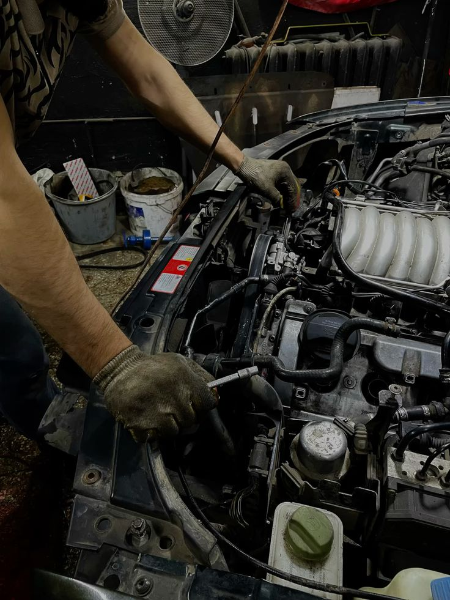
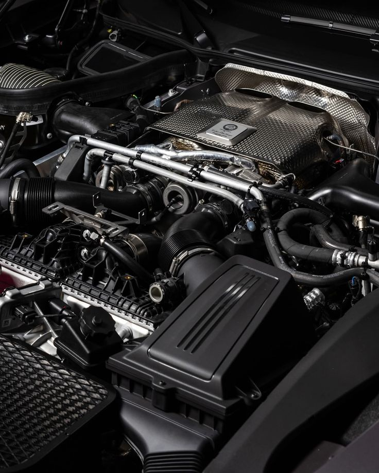
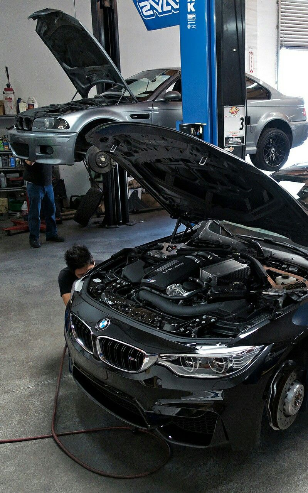
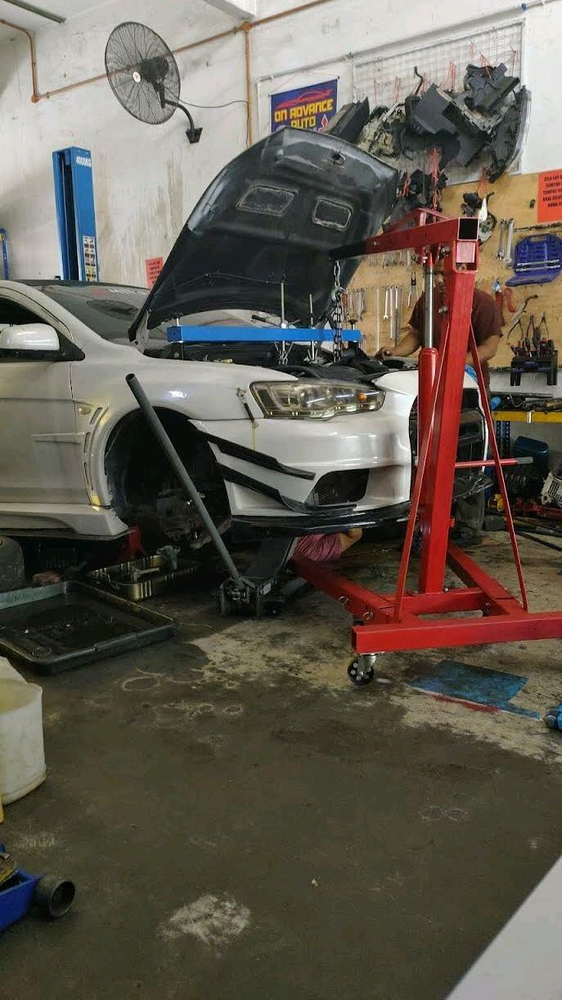
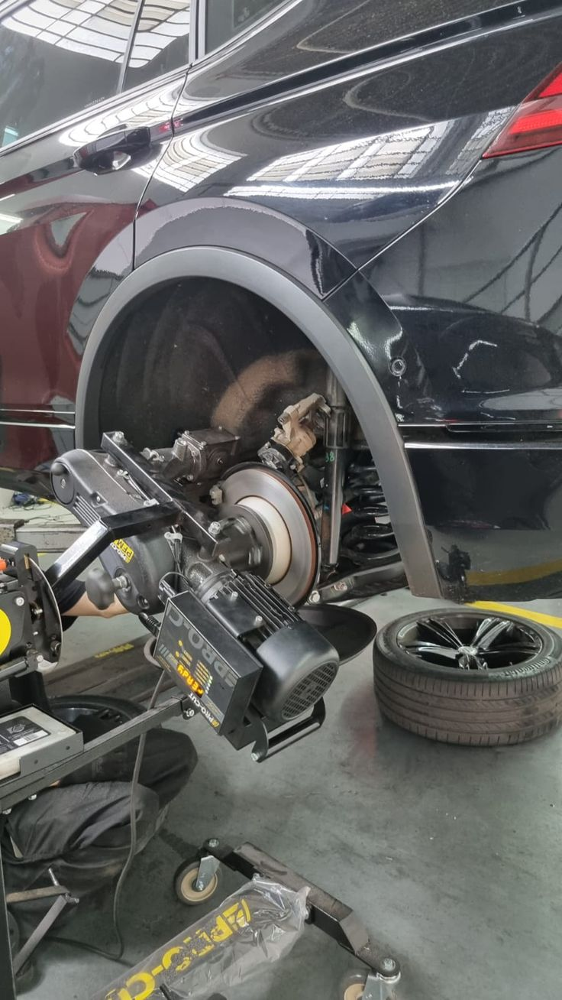
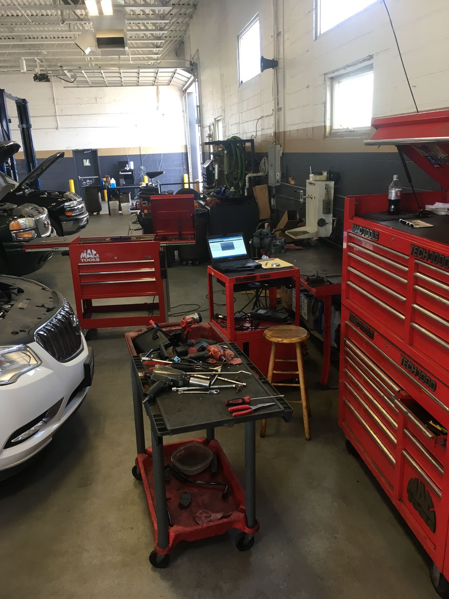

Manutenção
Serviços de manutenção e revisão para manter seu veículo funcionando com segurança e qualidade.

O sistema da Osvaldo Motors tem como objetivo facilitar o cadastro e o controle dos clientes, veículos e ordens de serviço, organizando as informações da oficina de forma simples e rápida.

Serviços de manutenção e revisão para manter seu veículo funcionando com segurança e qualidade.

Diagnóstico e reparos especializados para motores, garantindo o melhor funcionamento do veículo.

Atendimento especializado para veículos BMW, Audi e Mercedes.

Revisões completas para identificar problemas e manter seu carro em boas condições.

Verificação e manutenção do sistema de freios para garantir mais segurança durante a direção.

Estrutura completa para realizar diferentes serviços automotivos com organização e qualidade.
| Serviço | Preço |
|---|---|
| Troca de óleo | R$ 120,00 |
| Revisão do motor | R$ 350,00 |
| Reparo de motor | R$ 950,00 |
| Retífica de motor | R$ 2.500,00 |
Veículos importados: BMW, Audi e Mercedes terão acréscimo automático de 20% na mão de obra.
Ordens de serviço: todos os serviços realizados serão registrados no sistema.
Atendimento: o sistema será otimizado para utilização em celulares no pátio da oficina.